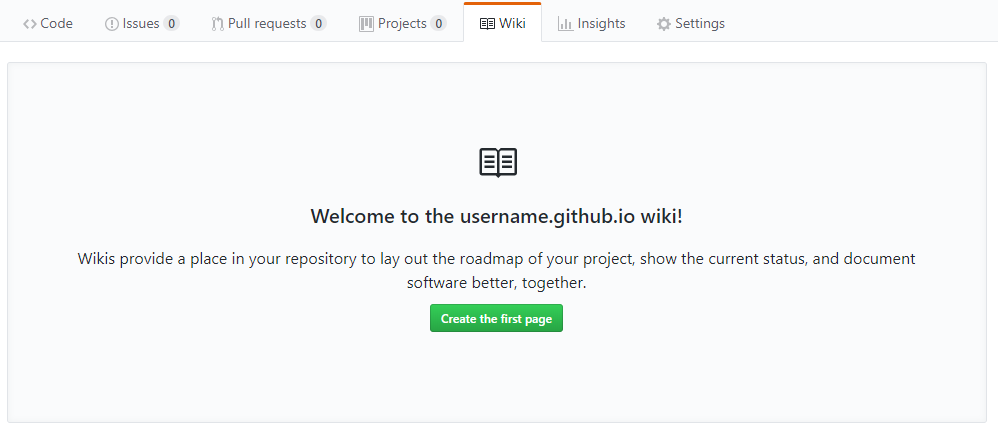
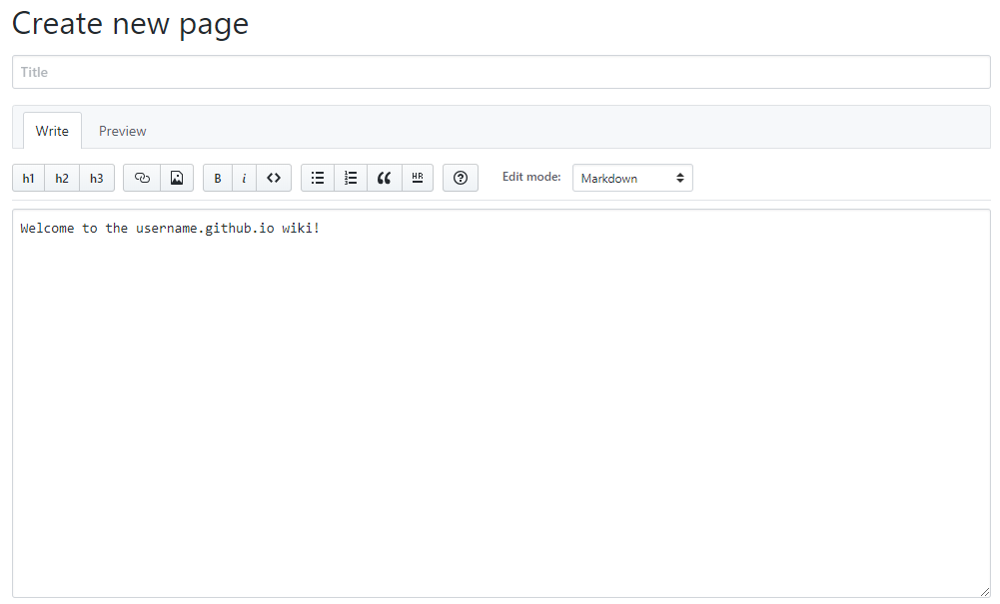
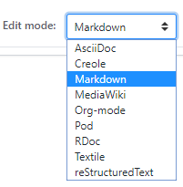
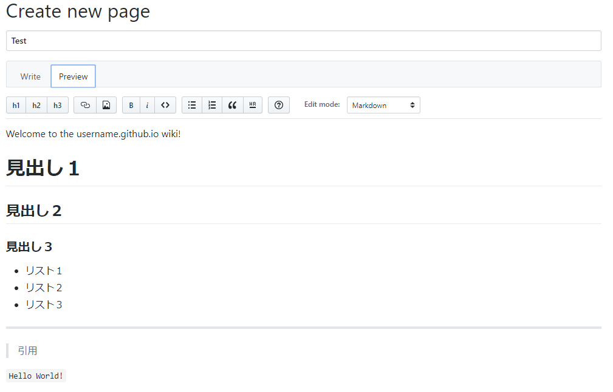

このページではWikiの使い方について紹介します。
まず、wikiへ行くとこの画面が表示されます。緑の『Create the first page』ボタンを押すことで、wikiの編集ページへ行きます。
『Title』に任意のタイトルを入れ、その下の大きなテキストボックスに本文を記述していきます。
タイトルの下に並んでいるボタンの右側に『Edit mode』というのがあります。デフォルトではマークダウン記法でしたが他にもいろいろ記述方法があるので自分に合ったものを選ぶといいでしょう。
編集したら、タイトルの下に『Preview』タブがあるので、クリックしてみると自分が書いたものを確認することができます。
完成したら一番下にある『Save Page』を押すと保存されます。
結果がこちらになります。